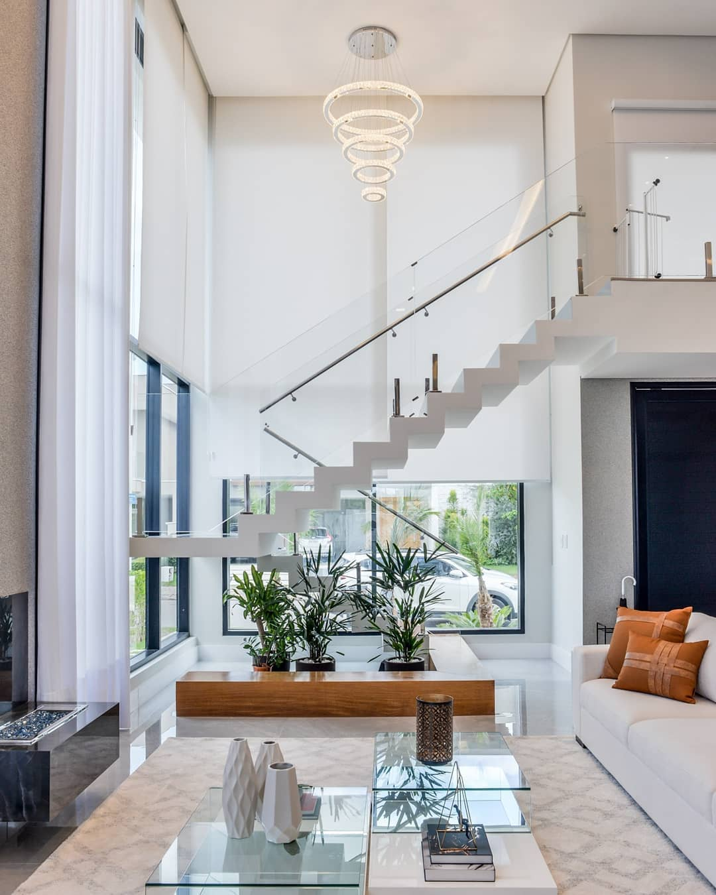
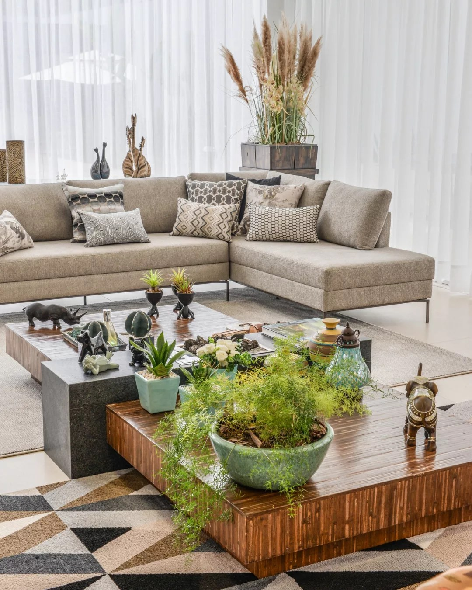
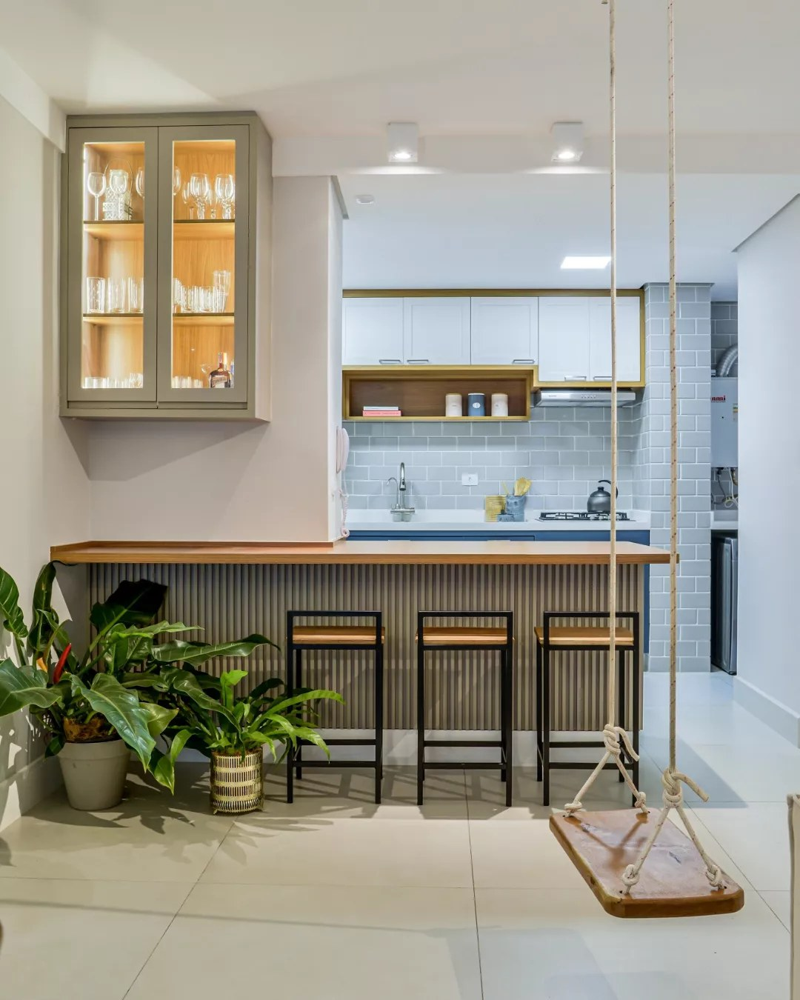

Seu projeto em sua melhor luz
Conte o que precisa ser fotografado e receba uma proposta pelo WhatsApp.
Arquitetos e designers
Ensaio completo: ambientes, detalhes, retrato profissional e recortes para publicação.
Construtoras
Obra entregue e decorado, com linguagem única para o lançamento, o estande e o portfólio.
Imóveis
Para imobiliárias e proprietários: o imóvel na melhor hora de luz, pronto para anúncio.




João Gobbo, Santo Arquiteto, Lara Amado, Dani Carneiro, Viviane Fortes, Leia Fonseca, Débora Oliveira, Otta Albernaz, Croma Arquitetos, Laire Designer
Vamos fotografar seu projeto?
Responda o que souber. O resto se resolve na conversa.
WhatsApp (12) 98162-4191